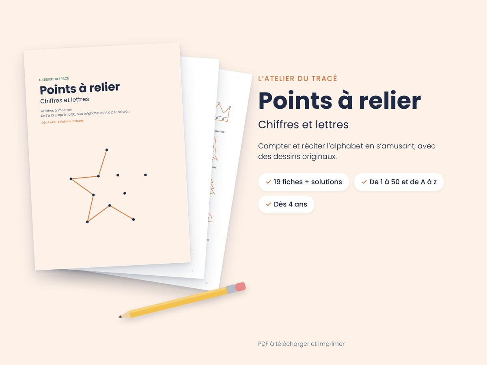
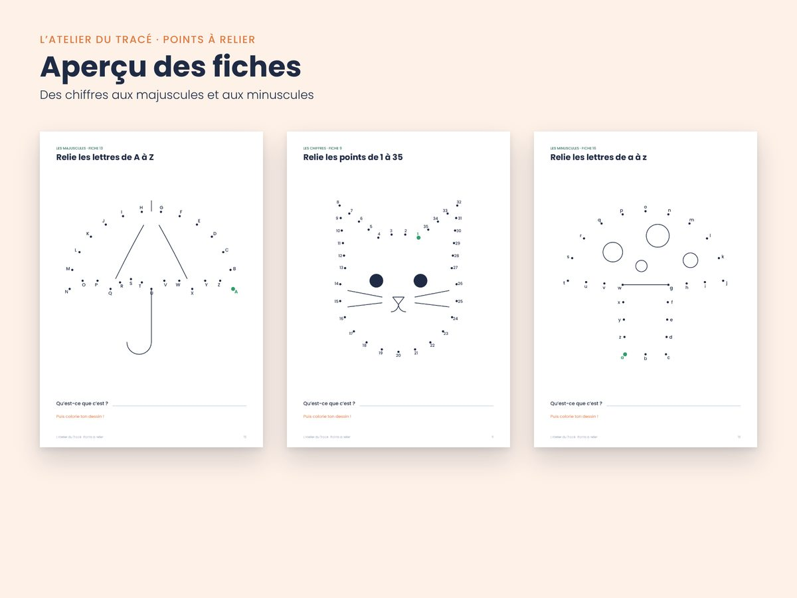

Enfants dès 4 ans
Points à relier · Chiffres et lettres
19 fiches de 1 à 10 jusqu’à 1 à 50, puis l’alphabet en majuscules et en minuscules. Solutions incluses.
Pour les enfants
Compter, réciter l’alphabet, puis colorier : une activité calme qui fait travailler les chiffres, les lettres et la main.

19 fiches de 1 à 10 jusqu’à 1 à 50, puis l’alphabet en majuscules et en minuscules. Solutions incluses.

10 fiches à imprimer pour compter et réciter l’alphabet pendant les fêtes.

Les pages offertes contiennent deux fiches de points à relier, à imprimer tout de suite.
Après le paiement sur Payhip, vous recevez un e-mail avec un lien de téléchargement. Le fichier est un PDF que vous gardez.
Oui, autant de fois que vous voulez pour votre usage personnel, familial ou pour votre classe.
Une imprimante, du papier A4 et un crayon. Pour l’écriture, un crayon à papier ou un stylo qui glisse bien est idéal.
Non. Ce sont des supports d’entraînement. En cas de difficulté importante, un orthophoniste, un graphothérapeute ou un formateur en alphabétisation reste la bonne personne à consulter.